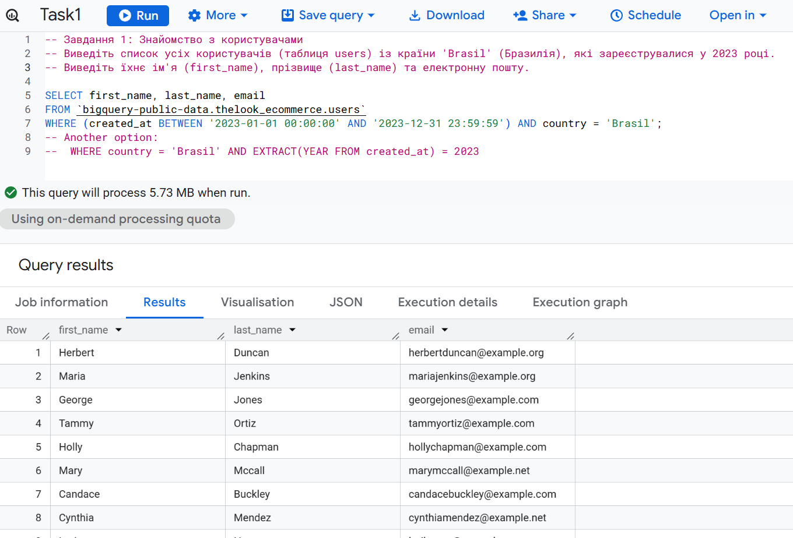

Блок 1: SQL-запити до даних (BigQuery)
Завдання 1: Користувачі з Бразилії, зареєстровані у 2023 році

Завдання 2: Загальна кількість товарів за категоріями

Завдання 3: Аналіз відправлених замовлень (об’єднання таблиць)


Завдання 4: Фінансовий аналіз — найдорожчі замовлення

Завдання 5: Географія клієнтів

Блок 2: Аналітичні панелі Tableau та висновки
Інтерактивна аналітична панель бізнес-показників
Блок 3: Python — Аналіз продажів та прогнозне моделювання
1. Exploratory Data Analysis & Data Integrity
Під час первинного дослідження у полі Net Amount було виявлено 613 від’ємних значень.
Порівняльна візуалізація розподілу до та після очищення продемонструвала відсутність суттєвої різниці у структурі даних.
З огляду на це було прийнято рішення видалити ці записи для забезпечення стабільності моделей.
Для прогнозування використано показник Gross Amount.
Initial Data Research (Net Amount Anomalies)

Post-Cleaning Distribution (Gross Amount)

2. Research Methodology: Testing Hypotheses
Для перевірки впливу віку на середній чек було використано три підходи:
- Numeric Age Analysis: використання віку як безперервної числової змінної.
- Age Categorical Groups: сегментація 18–25, 25–45, 45+.
- Multi-feature Behavioral Model: аналіз демографічних характеристик разом із платіжними методами.
3. Model Comparison Table
| # | Модель | R² | MAE | Ключові результати | Висновок |
|---|---|---|---|---|---|
| 3.1 |
Simple Linear Regression (Numeric Age) |
-0.00016 | $1433.87 |
Intercept: 3020.00 Age = 8.86 p-value = 0.3073 |
Вік не має статистично значущого лінійного впливу на витрати. |
| 3.2 |
Linear Regression (Categorical Age) |
0.00008 | $1433.68 |
Intercept: 3060.88 Усі p-value > 0.15 |
Статистично значущих відмінностей між віковими групами не виявлено. |
| 3.3 |
Random Forest (Categorical Age) |
0.00007 | $1433.68 |
Середній прогноз: $3045.47 Важливість ознак розподілена рівномірно |
Модель підтверджує дуже низьку прогностичну силу віку. |
| 3.4 |
Multiple Linear Regression (All Features) |
-0.00059 | $1433.99 |
PhonePe UPI: +129.60 (p=0.008) Gender_Other: +44.70 (p=0.021) Intercept: 2965.07 |
На витрати впливають платіжний метод та демографічні фактори, але не вік. |
| 3.5 | Final Numeric Validation | 0.00000 | $1438.57 |
Age = 3.24 p-value = 0.6758 |
Підтверджено вкрай слабкий числовий ефект віку. |
| 3.6 | Final Categorical Validation | 0.00020 | $1438.41 | Усі вікові групи статистично незначущі | Остаточне підтвердження: вікова категорія не впливає на витрати. |
4. Statistical Insights & Conclusions
Numeric Regression Plot

Categorical Comparison Plot

Аналіз показав, що вік клієнта не має статистично значущого впливу на величину середнього чека. Значення R² у всіх моделях наближене до нуля, що свідчить про відсутність пояснювальної сили.
Єдиний статистично значущий ефект виявлено у моделі Multiple Regression — платіжний метод PhonePe збільшує середній чек приблизно на 130 доларів.
Age is statistically insignificant. Фокус бізнес-стратегії доцільно змістити з вікової сегментації на аналіз платіжних методів та поведінкових характеристик клієнтів.